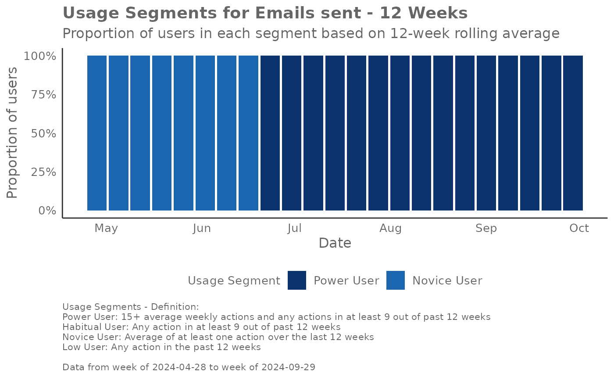
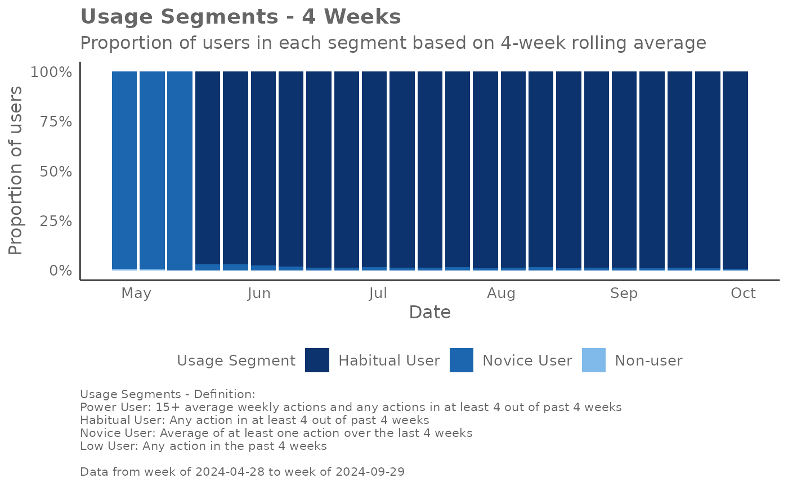

Identify Usage Segments based on a metric
Source:R/identify_usage_segments.R
identify_usage_segments.RdThis function identifies users into usage segments based on their usage
volume and consistency. The segments 'Power Users', 'Habitual Users', 'Novice
Users', 'Low Users', and 'Non-users' are created. There are two versions, one
based on a rolling 12-week average (version = "12w") and the other on a
rolling 4-week average (version = "4w"). While a main use case is for
Copilot metrics e.g. 'Total_Copilot_actions', this function can be applied to
other metrics, such as 'Chats_sent'.
Usage
identify_usage_segments(
data,
metric = NULL,
metric_str = NULL,
version = "12w",
return = "data"
)Arguments
- data
A data frame with a Person query containing the metric to be classified. The data frame must include a
PersonIdcolumn and aMetricDatecolumn.- metric
A string representing the name of the metric column to be classified. This parameter is used when a single column represents the metric.
- metric_str
A character vector representing the names of multiple columns to be aggregated for calculating a target metric, using row sum for aggregation. This is used when
metricis not provided.- version
A string indicating the version of the classification to be used. Valid options are
"12w"for a 12-week rolling average and"4w"for a 4-week rolling average. Defaults to"12w".- return
A string indicating what to return from the function. Valid options are:
"data": Returns the data frame with usage segments."plot": Returns a plot of the usage segments.
Value
Depending on the return parameter, either a data frame with usage
segments or a plot visualizing the segments over time. If "data" is passed
to return, the following additional columns are appended:
IsHabit12w: Indicates whether the user has a habit based on the 12-week rolling average.IsHabit4w: Indicates whether the user has a habit based on the 4-week rolling average.UsageSegments_12w: The usage segment classification based on the 12-week rolling average.UsageSegments_4w: The usage segment classification based on the 4-week rolling average.
@import slider slide_dbl
Details
There are two versions of usage segments, one based on a rolling 12-week
period (version = "12w") and the other on a rolling 4-week period (version = "4w"). This function assumes that in the input dataset is grouped at the
weekly level by the MetricDate column.
The definitions of the segments as per the 12-week definition are as follows:
Power User: Averaging 15+ weekly actions and any actions in at least 9 out of past 12 weeks
Habitual User: Any action in at least 9 out of past 12 weeks
Novice User: Averaging at least one action over the last 12 weeks
Low User: Any action in the past 12 weeks
Non-user: No actions in the past 12 weeks
The definitions of the segments as per the 4-week definition are as follows:
Power User: Averaging 15+ weekly actions and any actions in at least 4 out of past 4 weeks
Habitual User: Any action in at least 4 out of past 4 weeks
Novice User: Averaging at least one action over the last 4 weeks
Low User: Any action in the past 4 weeks
Non-user: No actions in the past 4 weeks
Examples
# Example usage with a single metric column
identify_usage_segments(
data = pq_data,
metric = "Emails_sent",
version = "12w",
return = "plot"
)

# Example usage with multiple metric columns
identify_usage_segments(
data = pq_data,
metric_str = c(
"Copilot_actions_taken_in_Teams",
"Copilot_actions_taken_in_Outlook",
"Copilot_actions_taken_in_Excel",
"Copilot_actions_taken_in_Word",
"Copilot_actions_taken_in_Powerpoint"
),
version = "4w",
return = "plot"
)
